全部 62 张启用图片
按实际显示窗口展示；原图与备用素材不纳入运行时资源下载。
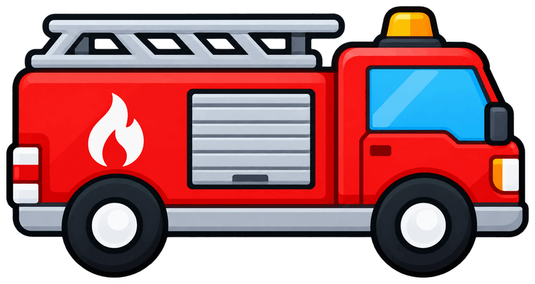
fire
重绘ambulance
保留police
保留bus
保留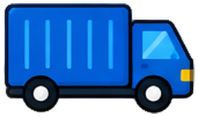
truck
保留delivery
保留digger
保留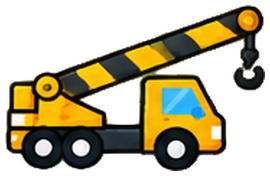
crane
保留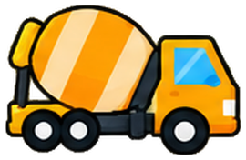
mixer
保留roller
保留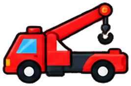
tow
保留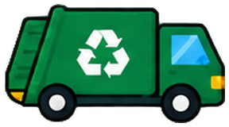
garbage
保留wheel
保留toolbox
保留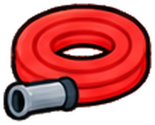
hose
保留bucket
保留helmet
保留cone
保留board
保留box
保留parcel
保留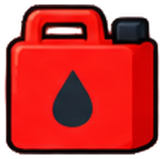
fuel
保留ladder
保留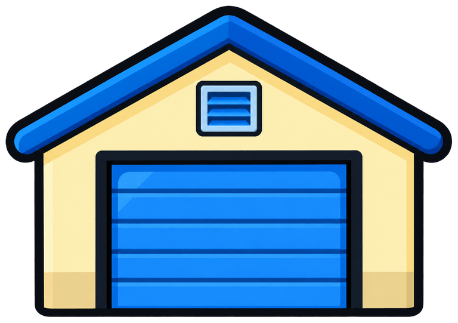
warehouse
重绘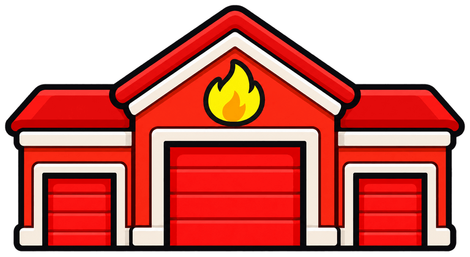
fireStation
重绘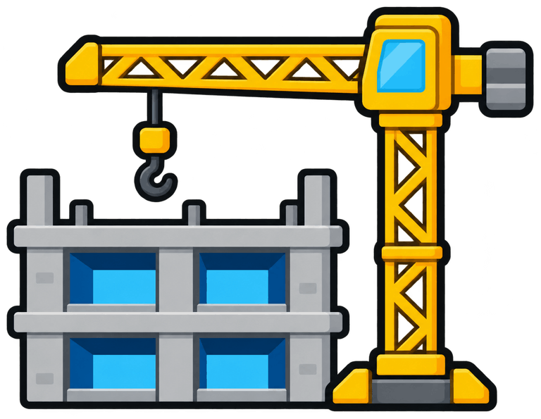
constructionSite
重绘shop
重绘hospital
重绘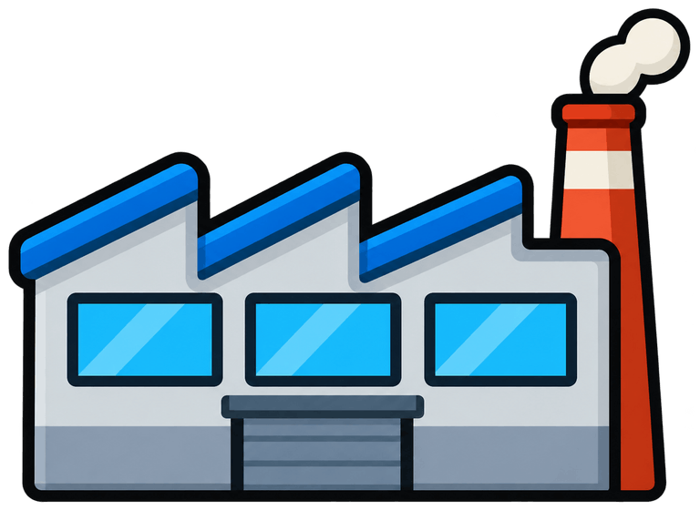
factory
重绘roundTree
保留pineTree
保留roundBush
保留cloud
保留doubleCloud
保留chevronSign
保留cargo-luggage
显示窗口对齐cargo-backpack
显示窗口对齐cargo-gift
显示窗口对齐cargo-toys
显示窗口对齐cargo-books
显示窗口对齐cargo-apples
显示窗口对齐cargo-vegetables
显示窗口对齐cargo-fish
显示窗口对齐cargo-milk
显示窗口对齐cargo-juice
显示窗口对齐cargo-hay
重绘cargo-paint
显示窗口对齐cargo-barrier
显示窗口对齐cargo-flowers
显示窗口对齐cargo-firstAid
显示窗口对齐cargo-picnic
显示窗口对齐cargo-oranges
重绘cargo-eggs
显示窗口对齐stop-home
显示窗口对齐stop-school
显示窗口对齐stop-police
显示窗口对齐stop-gas
显示窗口对齐stop-farm
显示窗口对齐stop-greenhouse
显示窗口对齐stop-parking
显示窗口对齐stop-busStop
显示窗口对齐stop-repair
显示窗口对齐